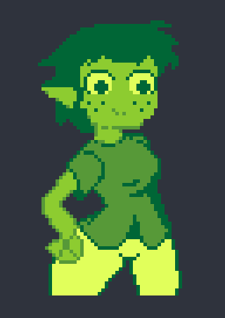
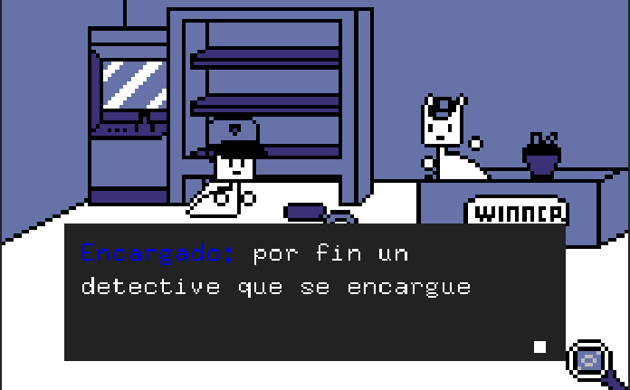

Hoy les presento este motor diseñado para crear un juego con imagenes e hipertexto Llamado Flicksy.
Con una cierta filosofia por la limitacion del cual son una resolucion de 100x160 pixeles por pantalla, 16 colores (15 en realidad por que el primero es la transparencia) en las dos versiones de Flicksy que existen.
La version antigua de Flicksy rige por el mismo patron pero con tres tipos de resolucion por pantalla para usar, una herramienta mas tosca para dibujar,un selector de colores u obtener variopintos colores con el boton de paleta aleatorias, y no tiene la opcion usar los scripts y variables incorporado al objeto, si no por separado, si lo usas recuerda que es un prototipo menos pulido del motor y puede tender a fallar, la unica cosa que podrias hechar de menos de su version mas pulida, es una mayor resolucion de pantalla.
Mi recomendacion es que uses Flicksy 2 es la version que esta recibiendo soporte y recibira las actualizaciones de su creador, tiene una mejora sustancial en las herramienta de dibujado, e incluye una demo para saber como opera el motor de forma general incluyendo mas funcionalidad
Ambas versiones te permiten importar imagenes .png, pixelart preferiblemente y la verdad es lo mas recomendable si tienes algo de habilidad para dibujar en pixelart.
Puede en un primer momento parecer algo artesanal pero con habilidad y mucha imaginacion puedes contar historias, ficciones interactivas, crear un pequeño sistema de mazmorras, crear novelas visuales, una simulacion de aventura grafica, o incluso un mini comic con opciones, lo que el sistema, tu habilidad e imaginacion pueden permitirte alcanzar.
Tal como puedes apreciar en la captura anterior esta una probable vision de tu juego o historia, y a estas alturas te preguntaras exactamente que haces